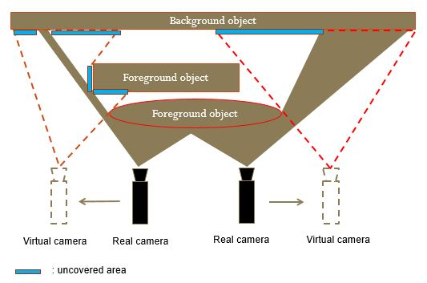
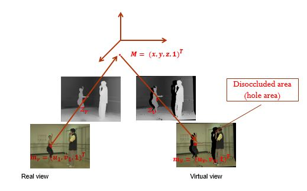

1. Depth Image Based Rendering
Depth Image Based Rendering (DIBR) is the process of systhesizing the virtual view from real view with associated depth information in stereo-vision.
Consider an 3D point \(M=(x, y, z, 1)^T\) in the world coordinate and its projection \(m_l=(u_l,v_l)^T, m_r=(u_r,v_r)^T\) in the left and right view.
From the Camera Calibration, we know the projection equation for each camera which is shown as follow
\[z_lm_l = K_l(R_lM + t_l) \tag{1}\]
\[z_rm_r = K_r(R_rM + t_r) \tag{2}\]
Where \(K_l\) and \(K_r\) represents for the intrintic parameters, \([R_l|t_l]\) and \([R_r|t_r]\) represents for the rotation and translation parameters, \(z_l\) and \(z_r\) are the associated depth information.
Suppose that \(K_l\), \(K_r\), \([R_l|t_l]\), \([R_r|t_r]\), \(z_l\), \(z_r\), and \(m_l\) are prior known, the DIBR process is to calculate the value \(m_r\)
Basically, the process of synthesizing the right view from the left view consists of 2 steps
-
Project the 2D point \(m_l\) from the left view image plane back into the real world coordinate as a 3D point \(M\).
From \((1)\)
\[M=z_lR_l^{-1}K_l^{-1}m_l - R_l^{-1}t_l \tag{3}\]
-
Project the 3D point \(M\) from real world coordinate into the right view image plane as 2D point \(m_r\).
Substitue \((3)\) into \((2)\)
\[m_r = \frac{1}{z_r}(K_rR_rR_l^{-1}(z_lK_l^{-1}m_l - t_l) + K_rt_r)\tag{4}\]
The equation \((4)\) is used to generate the virtual view, however because of the dis-occlusion problem, some unknown information area can be appeared.


Generally, information of this uncovered area can be additionally generated by the Object Removal by Exemplar-based Inpainting alogrithm or Hole-Filling Algorithm with Spatio-Temporal Background
Information for View Synthesis (My journal)
2. Experiment
3. References